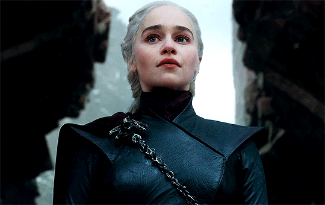

DAENERYS TARGARYEN

A fé. Não em algum deus, não em mitos e lendas. Em mim mesma. Em Daenerys Targaryen. O mundo não via um dragão havia séculos, até os meus filhos nascerem. Os dothraki não tinham cruzado o mar. Nenhum mar. Eles cruzaram por mim. Eu nasci para comandar os Sete Reinos. E vou comandar." ―Daenerys Targaryen
Daenerys Targaryen, também conhecida como Dany e Daenerys Nascida da Tormenta, era a irmã mais nova de Rhaegar e Viserys Targaryen, tia paterna de Jon Snow, e filha mais nova do Rei Aerys II com a Rainha Rhaella Targaryen, que foram ambos destronados do Trono de Ferro durante a Rebelião de Robert. Seguindo a morte de seu irmão Viserys, Daenerys ajudou Khal Drogo a levar seu khalasar até Westeros, mas a morte repentina de seu marido a fez mudar drasticamente seus planos. Graças a uma grande pira onde queimou os resto de Drogo, Daenerys fez com que seus ovos de dragões se chocassem e foi responsável pelo renascimento de tais criaturas no mundo conhecido há séculos. Se auto-proclamando Daenerys Nascida da Tormenta, da Casa Targaryen, a Primeira de Seu Nome, Rainha dos Ândalos, dos Roinares e dos Primeiros Homens, Protetora dos Sete Reinos, a Mãe de Dragões, a Khaleesi do Grande Mar de Grama, a Não Queimada, a Rompedora de Correntes, mais tarde simplificado para Daenerys da Casa Targaryen, a Primeira de Seu Nome, Rompedora de Correntes e Mãe de Dragões, ela vagou pelo Deserto Vermelho e conquistou a Baía dos Escravos, formando um exército enquanto partia para sua conquista de Westeros.